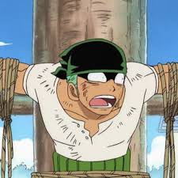
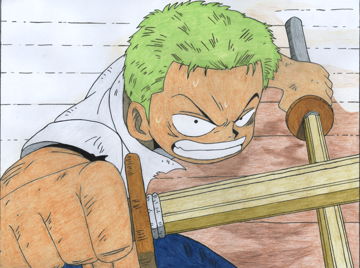
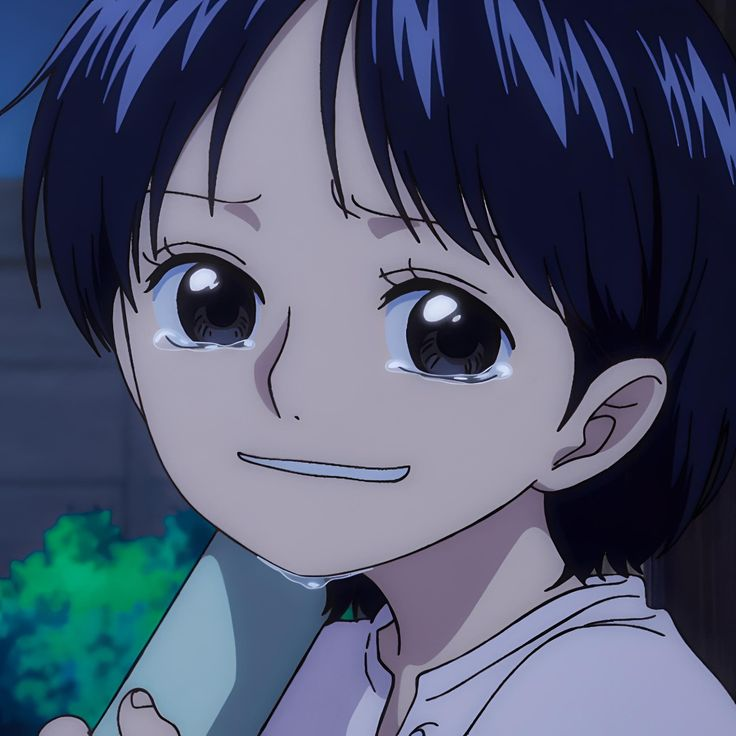
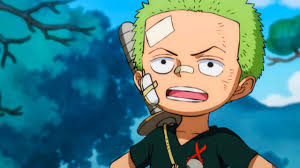
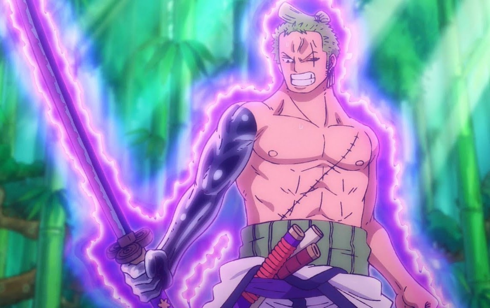
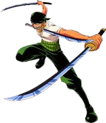
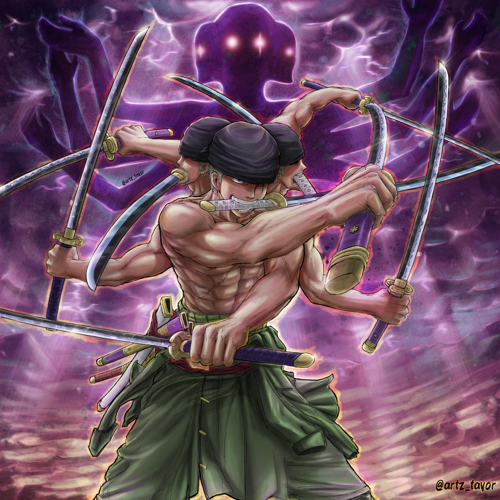

Roronoa Zoro
É o espadachim da tripulação dos Piratas do Chapéu de Palha. Conhecido por sua incrível habilidade com espadas e sua determinação inabalável, Zoro é um dos personagens mais emblemáticos de One Piece.
Roronoa Zoro é um símbolo de perseverança e dedicação. Sua busca incessante pela excelência inspira fãs a perseguirem seus próprios objetivos com determinação. Além disso, sua lealdade e espírito de equipe reforçam a importância da amizade e da cooperação.

Origem
Zoro nasceu na Vila Shimotsuki, no East Blue. Desde jovem, ele treinou arduamente para se tornar o melhor espadachim do mundo, inspirado por sua promessa de honrar a memória de sua falecida amiga, Kuina. Zoro é conhecido por sua lealdade extrema a Luffy e pela sua forte ética de honra. Apesar de sua aparência séria e muitas vezes intimidadora, ele possui um senso de justiça aguçado e uma personalidade resoluta.
  Habilidades
Zoro é um mestre no uso de três espadas, uma técnica conhecida como Santoryu. Ele empunha uma espada em cada mão e uma terceira na boca, demonstrando uma destreza impressionante em combate. Ao longo da série, Zoro desenvolve técnicas poderosas como Asura, que lhe permite criar ilusões de múltiplos braços e cabeças para aumentar sua força e defesa. Além disso, ele treina constantemente para aprimorar sua força física, resistência e habilidades de espada.
  